Hi, my name is
An aspiring UX researcher & designer
Based in Sydney, Australia, I'm currently transitioning into the world
of UX.
I’m fascinated by the intersection of people and
systems and I love asking (good) questions and learning from them to
help me create thoughtful design and experiences that feel coherent,
intuitive, and most importantly, human.
Artwork
Some of my professional work, personal experiments, and the projects I couldn't stop thinking about, created with curious minds.
01
Go Casual
Go Casual is a mobile app that connects casual workers and employers in hospitality through a smart, streamlined platform. Workers can manage profiles, availability, and job preferences, while employers can pre-set roles, filter candidates, and manage compliance.
- Role: UI Designer (6-month Contract)
- Problem: Translating the client’s vision into a functional, scalable interface with a strict high-fidelity MVP scope while bridging the gap between physical branding and digital experience.
- 6-month Contract
- Investor Pitch-ready MVP
- Professional
- UI Design
- First Figma Project


02
Internal Service Design
- Role: Systems Designer & Operations Liaison
- Problem: Fragmented communication between remote CX and on-site fulfillment led to "ghost" reservations, lost inventory, and customer churn.
- Stakeholder Management
- Workflow Improvements
- Interdepartmental Communications
- Service Design
- Self-initiated


03
Social Enterprise Web
- Role: Web Strategist & Admin
- Problem: Building a high-feature, low-cost web presence for a startup within severe technical and budgetary constraints.
- Technical Strategy
- Brand Integration
- Infrastructure Documentation
- Feasibility Reporting


04
The Guildford Cat Council
- Role: Designer and Front End Developer
- Problem: Taking a nuisance into a playful concept and transforming ideas to execution in form of a make-believe cat conference website.
- CSS, HTML & JS
- Github
- Personal Project

05
GenArt Projects
- Role: Designer/ Developer and Student
- Problem: Learning how to create generative art using different Javascript libraries and tools, and understanding the unique capabilities and use cases of each library.
- Javascript Library
- GenArt
- Personal Project
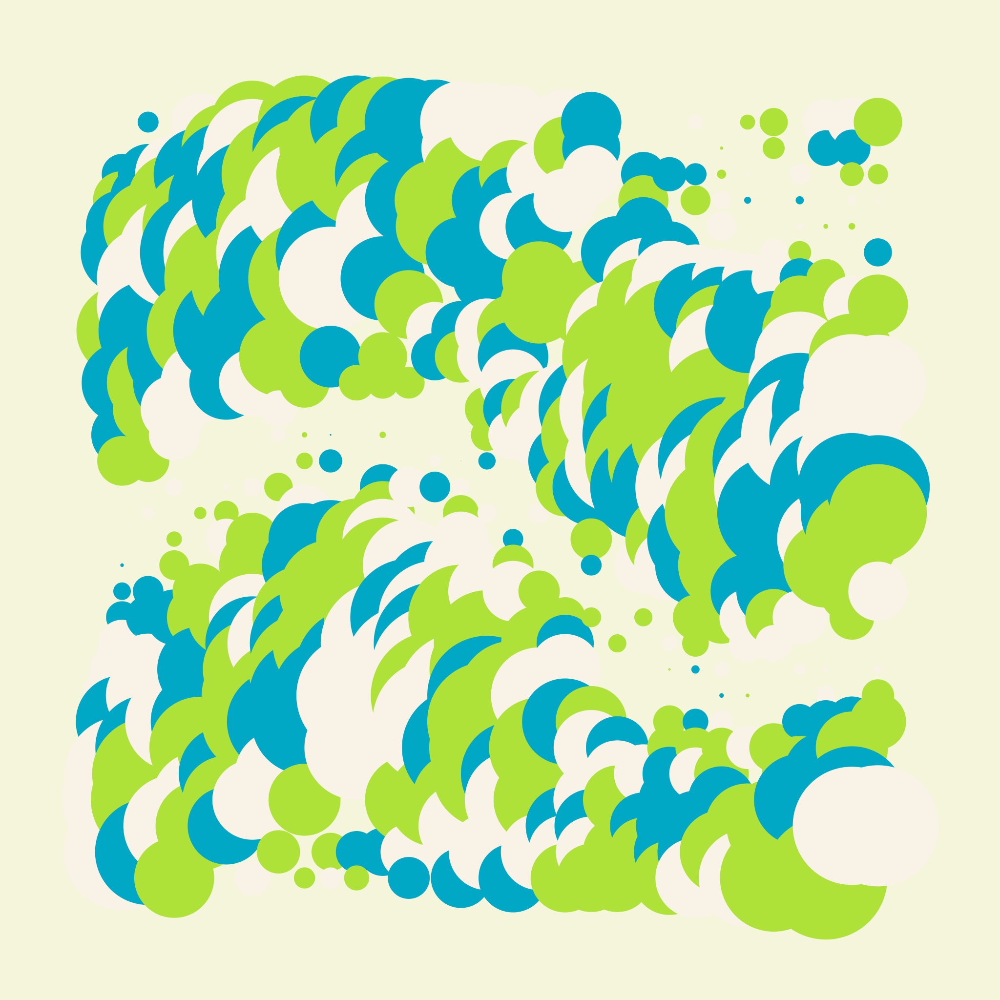
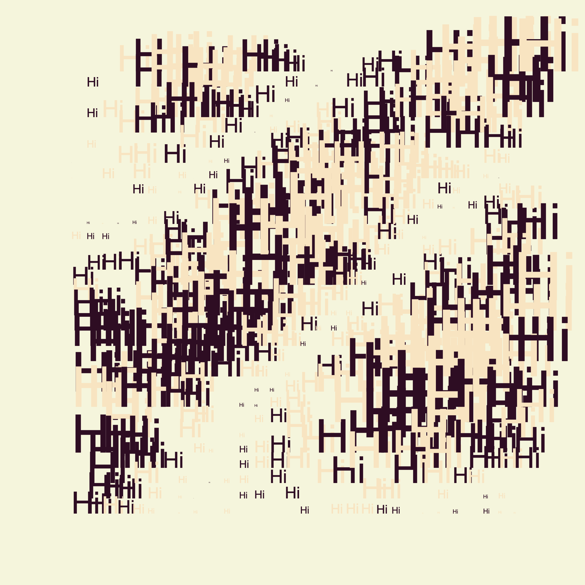
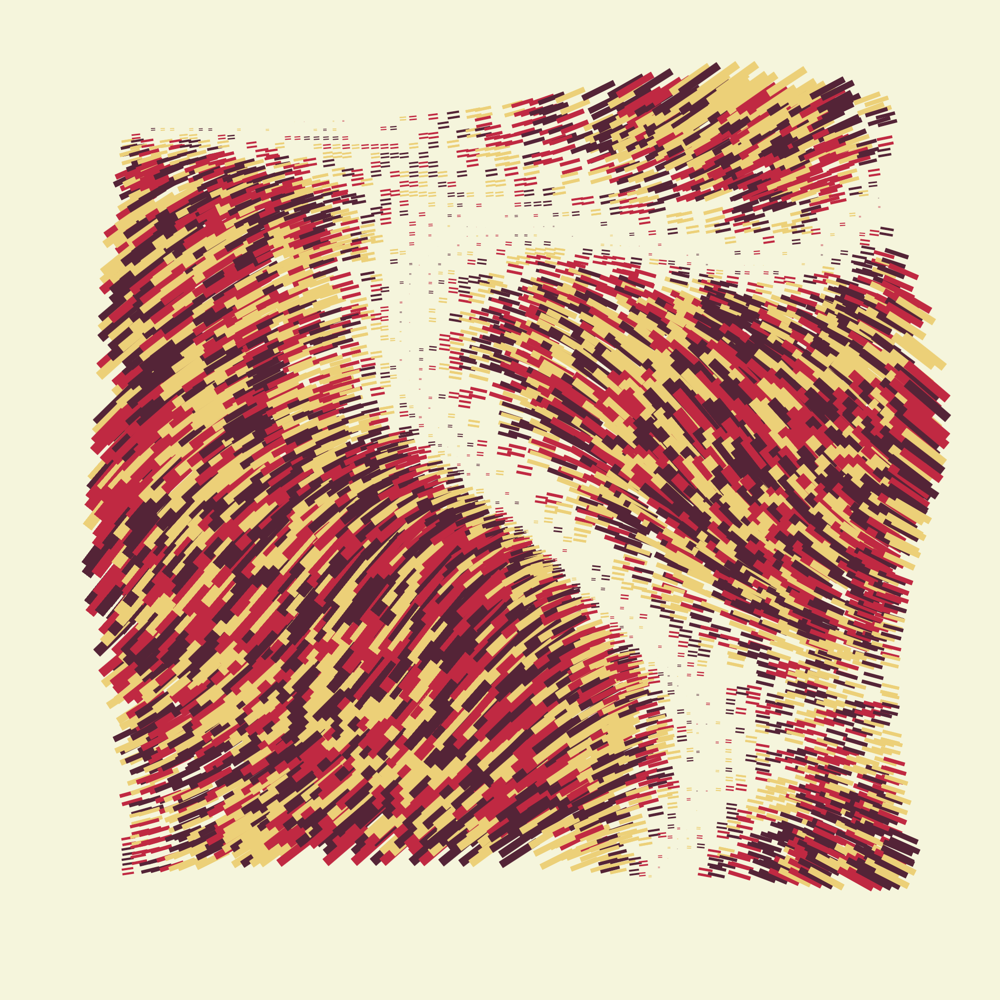
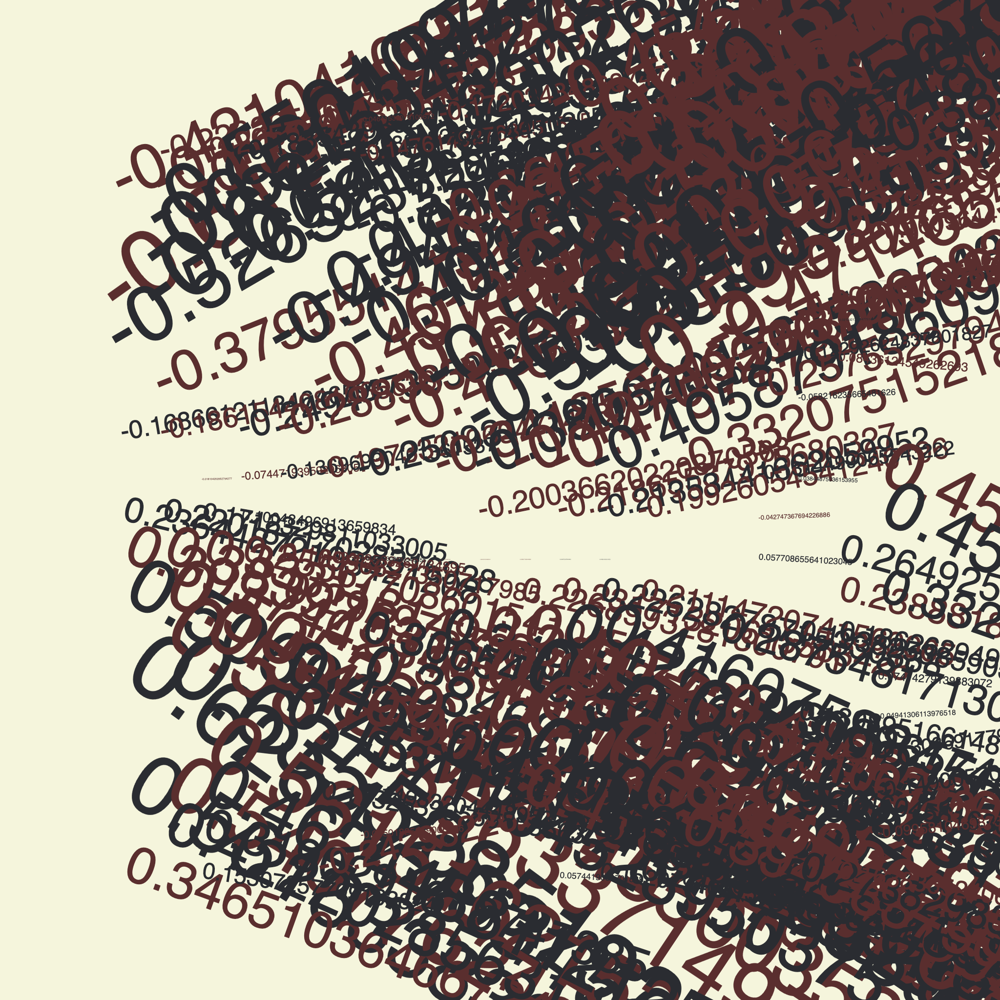
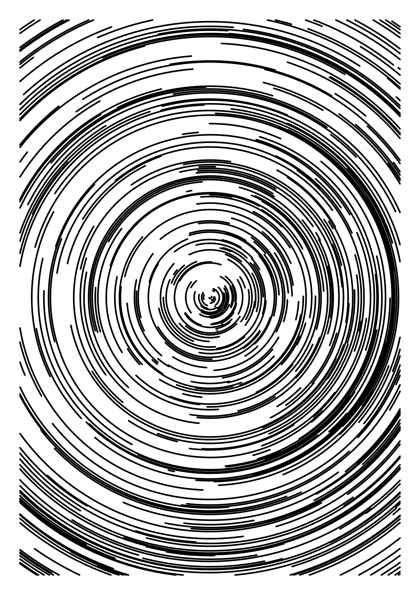
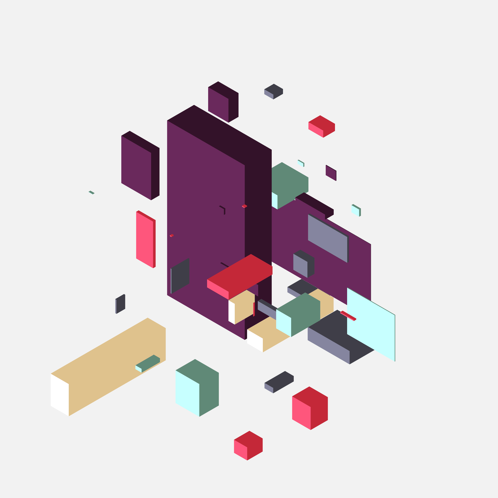
06
Munch Match
- Role: UI/UX Designer
- Problem: How might we help home cooks (me!) decide on what to eat without the decision-paralysis of too many saved recipes across too many platforms?
- Collaborative
- In Progress
- Personal Project
- UI/UX Design & Development


Knowledge
A snapshot of the tools and techniques I’m exploring, continuously growing and curious to learn more.
Current
HTML5
CSS3
SASS
npm
Git
Github
Basic Figma
WCAG2.1
Adobe Photoshop
Adobe InDesign
Adobe Illustrator
Learning Wishlist
TouchDesigner
Blender
Ongoing
Responsive Design
Vanilla JavaScript
Three.js
GSAP.js
Figma
UX R&D
Interests
What sparks my creativity and guides my work.
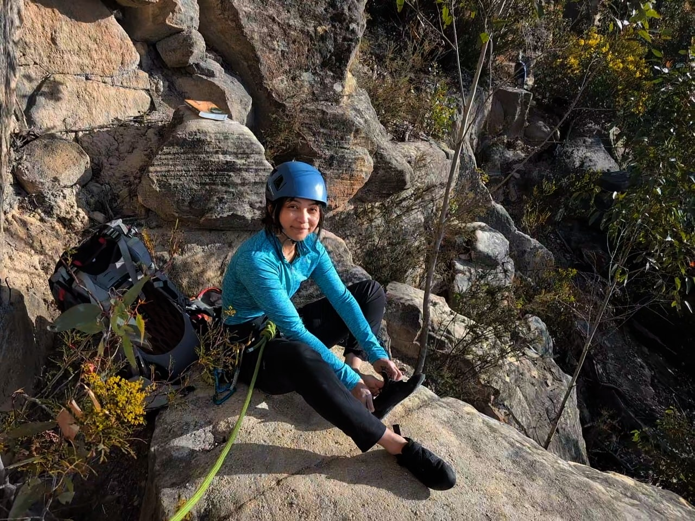

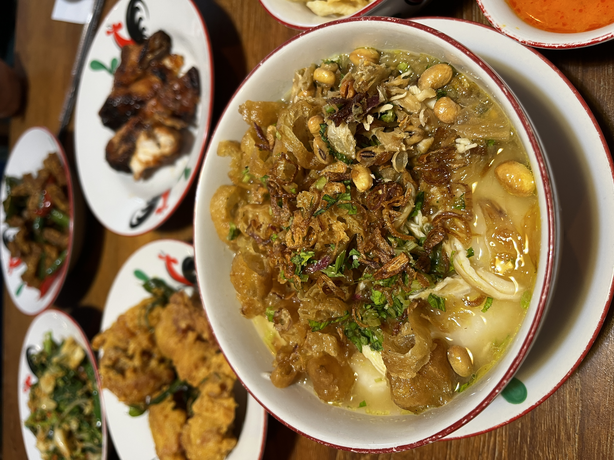
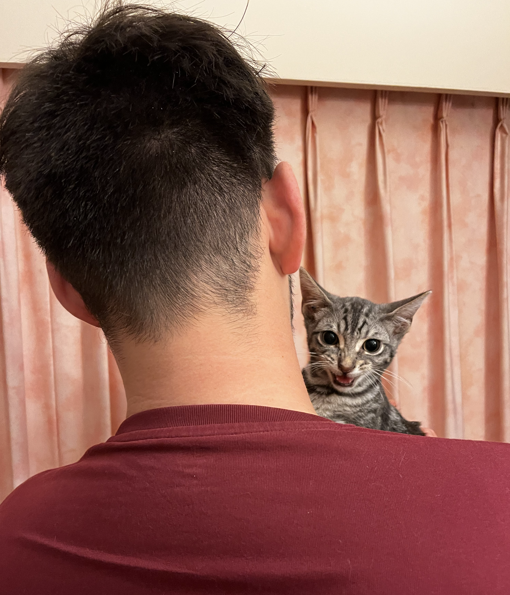
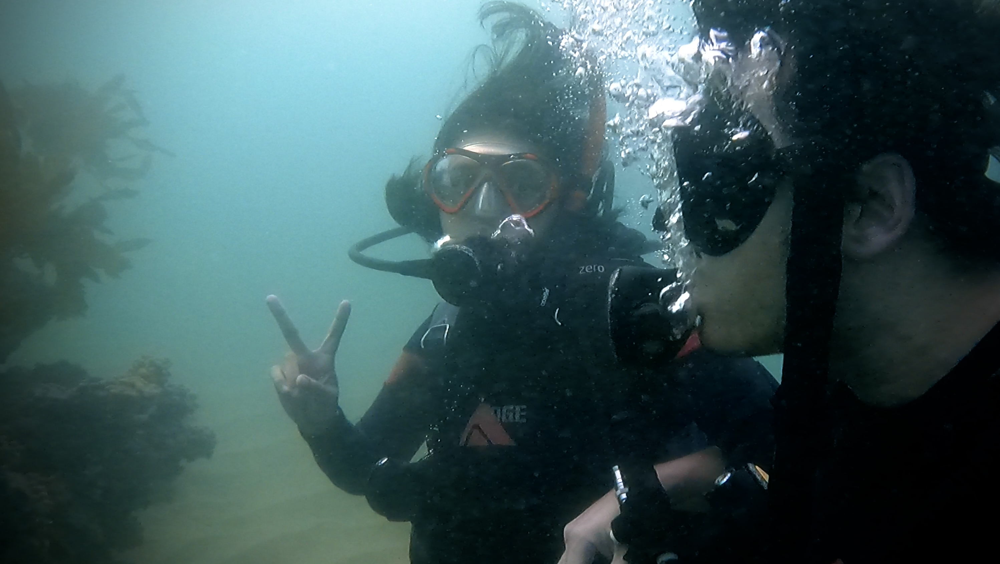
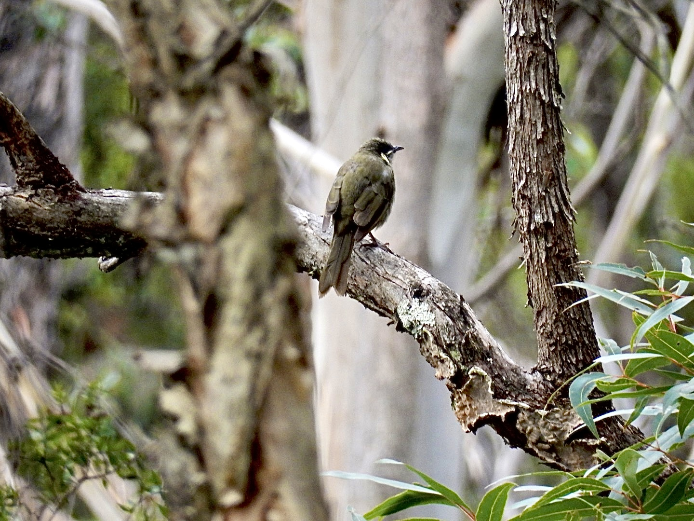
I'm keen to hear about any UX design and research roles,
internships, and freelance projects in Sydney.
Let's chat!